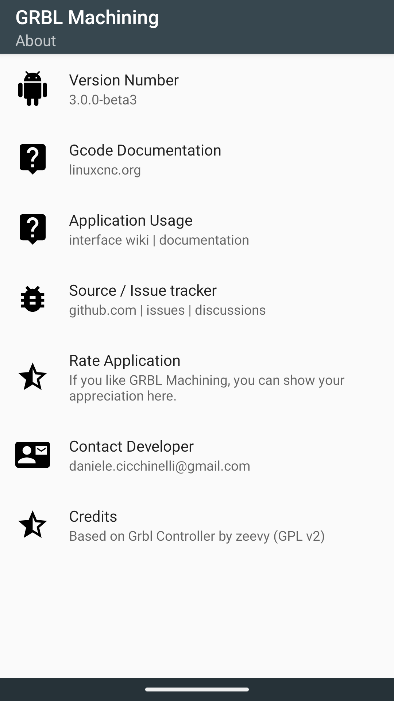

GRBL Machining è un fork mantenuto e ampliato di Grbl Controller di zeevy, distribuito con licenza GPL-3.0. Il copyright e i riconoscimenti del codice ereditato sono conservati.
Per licenze, autori e componenti completi consulta anche THIRD_PARTY_LICENSES.md.
